| Home | Introdução | Funções Exponenciais | Funções Modulares | Função Geral, Canônica e Fatorada | Logaritimos | Autoavaliação |
Funções Exponenciais são aquelas em que a variável está no esponente e a base é sempre maior que que zero e diferente de um. Ela é utilizada para descrever e modelar várias situações do nosso dia a dia, como por exemplo, na matemática financeira, na repdrodução de bactérias e, até mesmo, no comportamente de novos casos de covid-19 durante a pandemia. É representada pela equação: f(x) = ax, que pode criar um grafico crescente ou decrescente, dependendo do valor de a.
É quando pegamos o número da base e multiplicamos pela quantidade de vezes indicadas pelo expoente. Vejamos alguns exemplos:
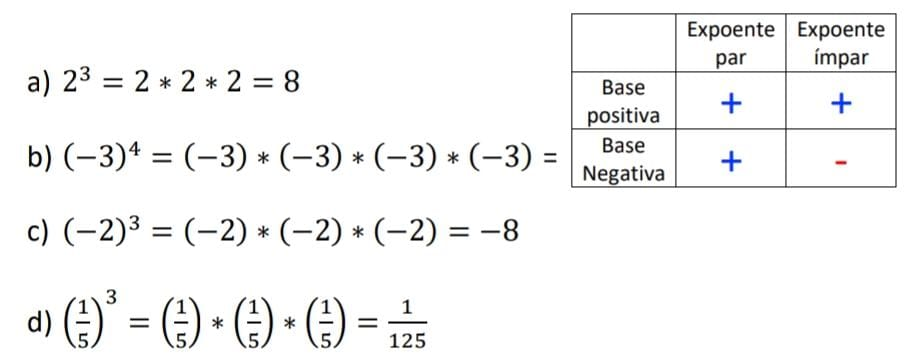Para calcularmos um número com expoente negativo, basta tranformá-lo em uma fração e elevalo ao módulo do expoente, ou seja, o mesmo expoente só que positivo. E com as frações isso não é diferente, você só precisa iverte-lá,o numerador vira denominador e vice-versa, e por fim, é só elevala ao seu expoente original, só que dessa vez, positivo. Vejamos alguns exemplos:
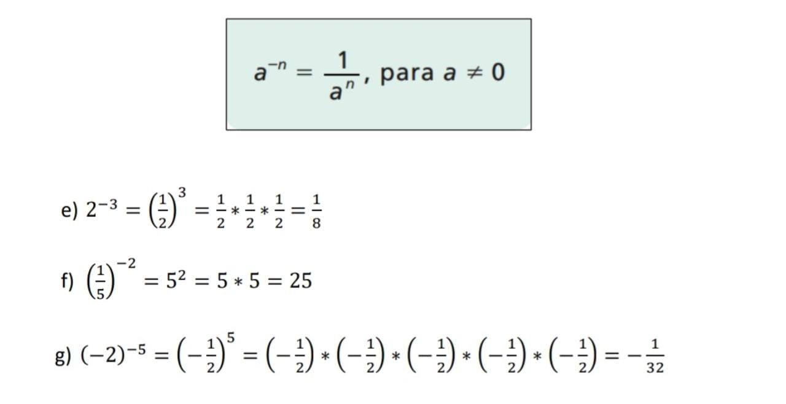Potência de base dez é um número cuja base será sempre dez elevada a um expoente interio n, que pode ser tanto negativo como positivo. É normalmente usada para representar números muito grandes ou muito pequenos. Exemplos:
| 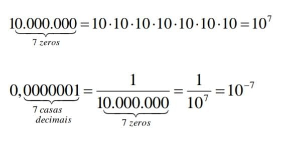 | 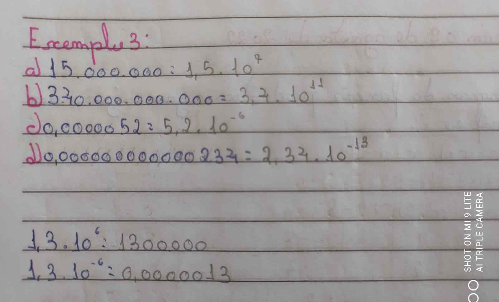 |
Ao utilizarmos números com potência de base dez, podemos transoformar números muito grandes ou muito pequenos em notações que facilitam a visualização e, para fazermos isso, basta "andarmos" com a vírgula.
| 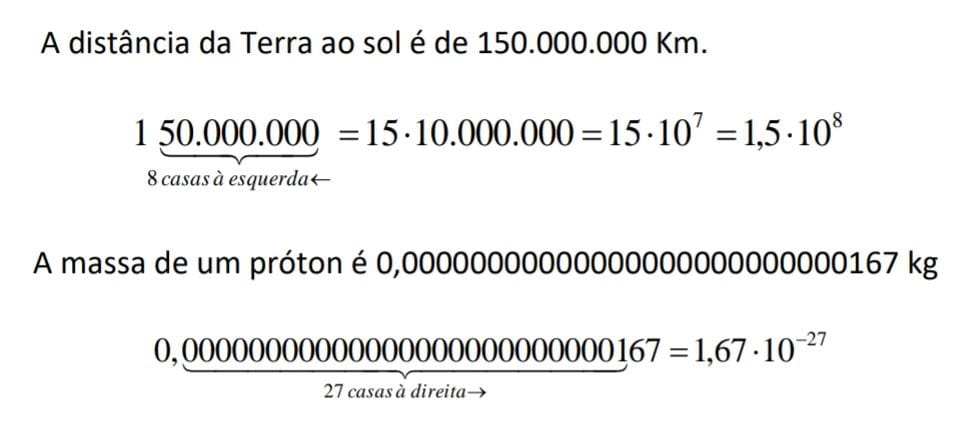 | 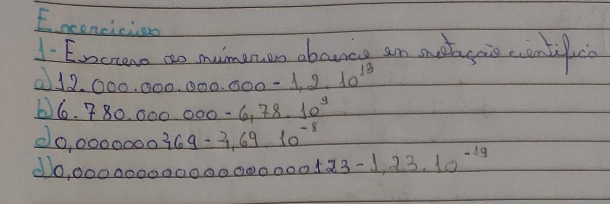 |
Se excontrarmos potências com expoentes racionais, sejam eles frações ou números decimais, podemos tranformar em raízes e vice-versa. Olhe os exemplos:
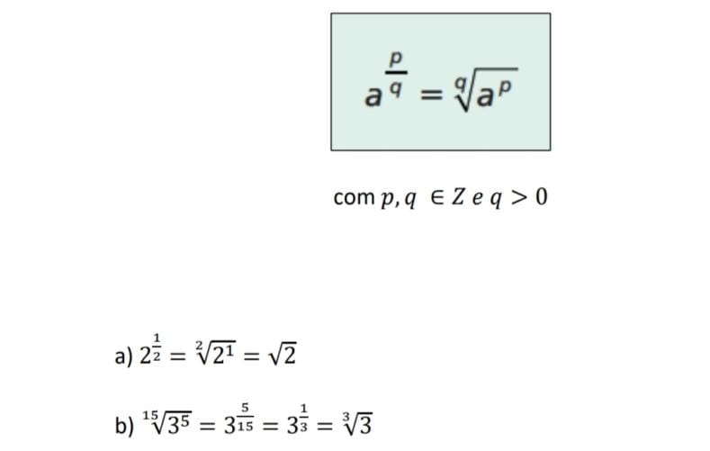São funções que servem, por exemplo, para determinar o tamanho de uma população (de bacterias, pessoas, vírus, pessoas contaminadas etc) em função do tempo, servem para calcular o rendimento de um inverstimento a juros composto, entre outros.
| 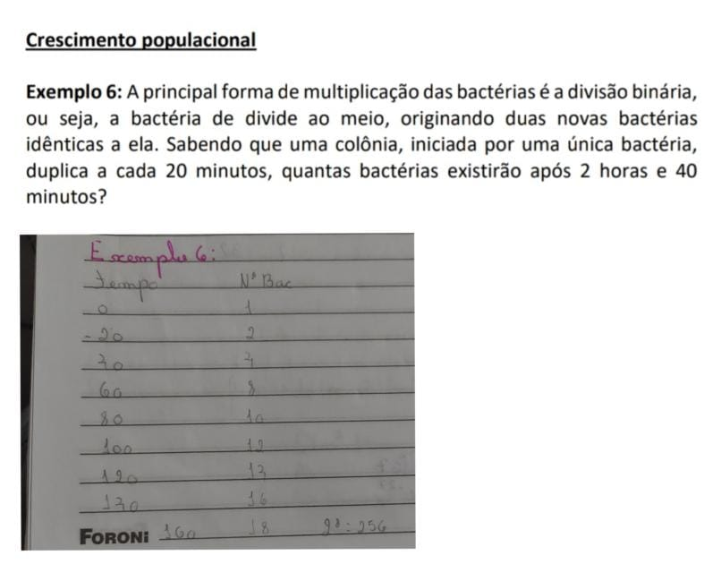 | 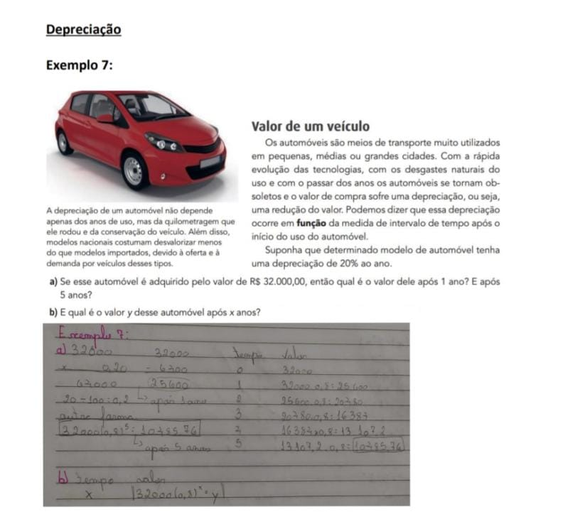 | 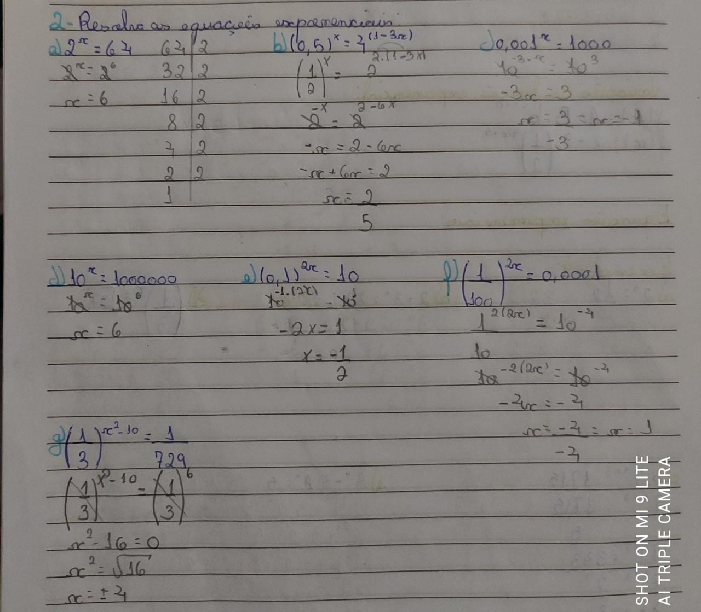 |
Para contruir um gráfico, são necessárias apenas duas etapas, a primeira delas é: analisar se a curvá será crescente ou descrescente através da base "a" da potência, depois disso é só encontrar pontos na curva atribuindo valores a "x".
| 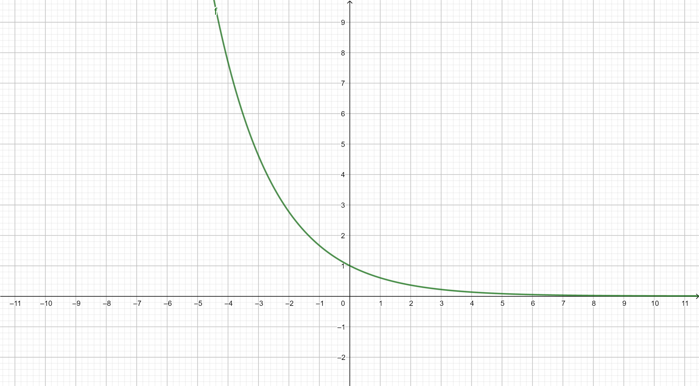
Decrescente |
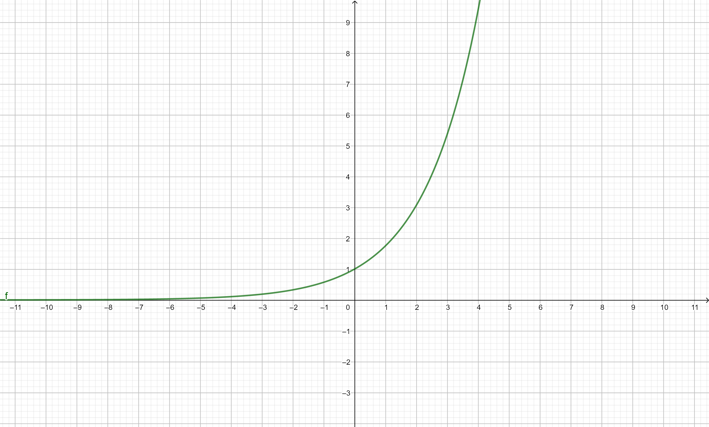
Crescente |
Apesar dos diversos tópicos que envolvem as funções exponencias, eu as considero, do meu ponto de vista, o conteúdo mais fácil que tivemos durante este semestre. No começo, eu fiquei um pouco aflita porque parecia ser um conteúdo realmente complexo, mas ao decorrer das aulas e das explicações da profe Valéria, eu percebi que tão precisava ter ficado tão assustada, já que foi um dos conteúdos que mais tive facilidade e gostei de aprender. Não tive quase nenhuma dificuldade, e as que tive foram rapidamente cessadas pela professora, também consegui realizar todas as atividades propostas em aula e fora dela.